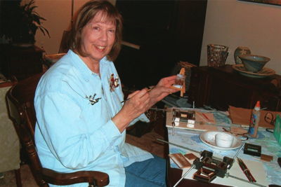

Pat enjoys painting with acryclic paint on masonite. Pat is an active member of the Farmington Art Foundation in Farmington, Michigan.

- growing on a small farm in Virginia influenced her choice of subject
- started to paint miniatures in 1980
- Painted with oils in the early years. Starting when 12, through about 15 years. She got tired of the smell of oils.
- Mrs. Alexander, private lessons in high school, many classes in college at Bridgewater, and post college through community education.
- For miniatures, Pat favors masonite with acrylic paints. She does some watercolor, but doesn’t like it.